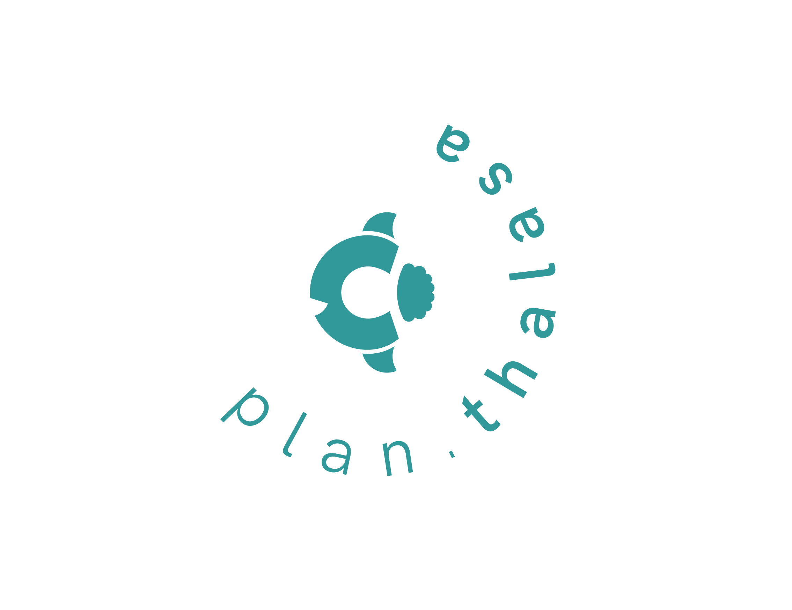

PLAN.T
New Corporate Identity

Welcome to the Official Visual Identity Manual of Plan.Thalassa. This is a redesign for a project from this very portfolio: YUNA, the microplastic-filtering buoy. In this manual, you will find all the necessary information to correctly use our brand and its visual elements.
YUNA is a microplastic filtration system originally designed both to clean the seas and raise public awareness about this issue. The concept involves implementing a water filtration technology into an existing buoy to collect and reduce plastic waste.

The new name is inspired by Pantalassa or Panthalassa, the vast ocean that once surrounded the ancient supercontinent Pangaea, translating to “all seas.” In this manual, you will find all the necessary information to correctly use our brand and its visual elements.
Thalassa (or Tálasa) is also the name of the primordial Greek goddess of the sea, who, according to mythology, created fish and other marine creatures alongside Pontus.
The symbol’s shape originates from the idea of merging one of the letters of the name with a mola mola (ocean sunfish)—the fish that inspired YUNA’s design—resulting in a simplified, schematic representation of this species.
Now, as a start-up, we offer environmental consulting services for ports and municipalities. Thanks to our buoys, we provide real-time measurement services to assess the levels of microplastics and other harmful components in coastal waters. This data is continuously updated, and we propose viable solutions when pollutants are detected.
Additionally, through communication campaigns, workshops, and exhibitions, we aim to educate the public by sharing collected data, encouraging their participation in reducing marine microplastic pollution.
Up next, you can dive deeper into the full Corporate Identity Manual or take a quick look at the website summary!
Ver manual completo